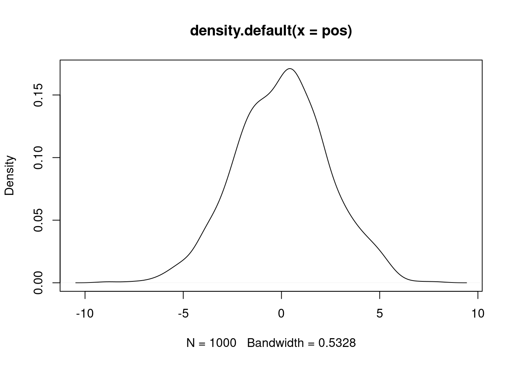

4.1 Why normal distributions are normal

These appear all throughout nature. Why are they so normal? They arise from all over the place.
4.1.1 Normal by addition
One of the things that are nice about them is that they are additive. So easy to work with. Second is that they’re very common.
Imagine a football pitch. We all line up on the midfield line. Take a coin out of your pocket and flip it. One step left for heads, right for tails. Do it a few hundred times.


The frequency distribution will be Gaussian.
pos = replicate(1000, sum(runif(16, -1, 1)))
plot(density(pos))
This is a simulation of the soccer field experiment. After four flips (steps). Black follows one particular student. A pattern forms in the aggregation. This isn’t very Gaussian yet.
After 8 it’s pretty Gaussian.
![And after 16 it's very Gaussian. It'll get wider and wider over time. Why does this happen? Lot's of mathematical theorems. But the intuition is that each coin flip is a fluctuation. And in the long run, fluctuations tend to cancel. If you get a string of lefts, eventually you'll get a string of rights, so the average student will end up near the middle. A very large number of them exactly cancel each other. There are more paths that will give you 0 than any other path. Then there are a few less that give you +1 or -1. And so forth.](slides/L03/15.png)
And after 16 it’s very Gaussian. It’ll get wider and wider over time. Why does this happen? Lot’s of mathematical theorems. But the intuition is that each coin flip is a fluctuation. And in the long run, fluctuations tend to cancel. If you get a string of lefts, eventually you’ll get a string of rights, so the average student will end up near the middle. A very large number of them exactly cancel each other. There are more paths that will give you 0 than any other path. Then there are a few less that give you +1 or -1. And so forth.
# we set the seed to make the results of `runif()` reproducible.
set.seed(4)
pos <-
# make data with 100 people, 16 steps each with a starting point of `step == 0` (i.e., 17 rows per person)
crossing(person = 1:100,
step = 0:16) %>%
# for all steps above `step == 0` simulate a `deviation`
mutate(deviation = map_dbl(step, ~if_else(. == 0, 0, runif(1, -1, 1)))) %>%
# after grouping by `person`, compute the cumulative sum of the deviations, then `ungroup()`
group_by(person) %>%
mutate(position = cumsum(deviation)) %>%
ungroup()
ggplot(data = pos,
aes(x = step, y = position, group = person)) +
geom_vline(xintercept = c(4, 8, 16), linetype = 2) +
geom_line(aes(color = person < 2, alpha = person < 2)) +
scale_color_manual(values = c("skyblue4", "black")) +
scale_alpha_manual(values = c(1/5, 1)) +
scale_x_continuous("step number", breaks = c(0, 4, 8, 12, 16)) +
theme(legend.position = "none")
# Figure 4.2.a.
p1 <-
pos %>%
filter(step == 4) %>%
ggplot(aes(x = position)) +
geom_line(stat = "density", color = "dodgerblue1") +
labs(title = "4 steps")
# Figure 4.2.b.
p2 <-
pos %>%
filter(step == 8) %>%
ggplot(aes(x = position)) +
geom_density(color = "dodgerblue2", outline.type = "full") +
labs(title = "8 steps")
# this is an intermediary step to get an SD value
sd <-
pos %>%
filter(step == 16) %>%
summarise(sd = sd(position)) %>%
pull(sd)
# Figure 4.2.c.
p3 <-
pos %>%
filter(step == 16) %>%
ggplot(aes(x = position)) +
stat_function(fun = dnorm,
args = list(mean = 0, sd = sd),
linetype = 2) +
geom_density(color = "transparent", fill = "dodgerblue3", alpha = 1/2) +
labs(title = "16 steps",
y = "density")
library(patchwork)
# combine the ggplots
(p1 | p2 | p3) & coord_cartesian(xlim = c(-6, 6))![That's why a bunch of natural systems are normally distributed. We don't need to know anything except that they cancel out. A lot of common statistics follow this kind of process. What you're left with are particular shapes, called *maximum entropy distributions*. For the Gaussian, **addition** is our friend. One of the things about it is that products of deviations are actually addition. So lots of multiplicative interactions also produce Gaussian distributions. You can measure things on logarithmic scales.](slides/L03/16.png)
That’s why a bunch of natural systems are normally distributed. We don’t need to know anything except that they cancel out. A lot of common statistics follow this kind of process. What you’re left with are particular shapes, called maximum entropy distributions. For the Gaussian, addition is our friend. One of the things about it is that products of deviations are actually addition. So lots of multiplicative interactions also produce Gaussian distributions. You can measure things on logarithmic scales.
![This is the ontological perspective on distributions. When fluctuations tend to dampen one another, you end up with a symmetric curve. What neat and also frustrating is that you lose a lot of information about the generative processes. When you see heights are normally distributed, you learn basically nothing about it. This is cool because all that's preserved from the underlying process is the mean and the variance. What's terrible is that you can't figure out the process from the distribution. All the maximum entropy distributions have the same feature. Power laws arise through lots of processes, and it tells you nothing other than it has high variance. The other perspective is epistemological. If you're building a model and you want to be as conservative as possible, you should use the Gaussian distribution. Because any other distribution will be narrower. So it's a very good assumption to use when you don't have additional information. The Gaussian is the one where all you're willing to say is there's a mean and a variance, you should use the Gaussian. It assumes the least.](slides/L03/18.png)
This is the ontological perspective on distributions. When fluctuations tend to dampen one another, you end up with a symmetric curve. What neat and also frustrating is that you lose a lot of information about the generative processes. When you see heights are normally distributed, you learn basically nothing about it. This is cool because all that’s preserved from the underlying process is the mean and the variance. What’s terrible is that you can’t figure out the process from the distribution. All the maximum entropy distributions have the same feature. Power laws arise through lots of processes, and it tells you nothing other than it has high variance. The other perspective is epistemological. If you’re building a model and you want to be as conservative as possible, you should use the Gaussian distribution. Because any other distribution will be narrower. So it’s a very good assumption to use when you don’t have additional information. The Gaussian is the one where all you’re willing to say is there’s a mean and a variance, you should use the Gaussian. It assumes the least.
4.1.2 Normal by multiplication
This code just samples 12 random numbers between 1.0 and 1.1, each representing a proportional increase in growth. Thus 1.0 means no additional growth and 1.1 means a 10% increase.
set.seed(4)
prod(1 + runif(12, 0, .1))## [1] 1.774719Now what distribution do you think these random products will take? Let’s generate 10,000 of them and see:
set.seed(4)
growth <-
tibble(growth = map_dbl(1:10000, ~ prod(1 + runif(12, 0, 0.1))))
ggplot(data = growth, aes(x = growth)) +
geom_density()
Multiplying small numbers if approximately the same as addition.
The smaller the effect of each locus, the better this additive approximation will be. In this way, small effects that multiply together are approximately additive, and so they also tend to stabilize on Gaussian distributions.
Verify by comparing:
# simulate
set.seed(4)
samples <-
tibble(big = map_dbl(1:10000, ~ prod(1 + runif(12, 0, 0.5))),
small = map_dbl(1:10000, ~ prod(1 + runif(12, 0, 0.01))))
# wrangle
samples %>%
pivot_longer(everything(), values_to = "samples") %>%
# plot
ggplot(aes(x = samples)) +
geom_density(fill = "black") +
facet_wrap(~ name, scales = "free") 
4.1.3 Normal by log-multiplication
Large deviates that are multiplied together do not produce Gaussian distributions, but they do tend to produce Gaussian distributions on the log scale. e.g.:
samples %>%
mutate(log_big = log(big)) %>%
ggplot(aes(x = log_big)) +
geom_density(fill = "gray33") +
xlab("the log of the big")
Adding logs is equivalent to multiplying the original numbers.
4.1.4 Using Gaussian distributions
Caution: Many natural (and unnatural) processes have much heavier tails - much higher probabilities of producing extreme events.